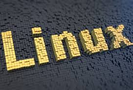

Richard Stallman a écrit une quantité étonnante de logiciels, fruit d'un travail laborieux durant plusieurs années. Mais après tous ses efforts, il n'a pas réussi à créer un système complet et autonome. C’est en s’associant à Linus qu’ils vont présenter un nouveau système d’exploitation :GNU/Linux . C’est là où Linus va devenir célèbre en tant que programmeur.
Après ses succès, il déménage à la Silicon Valley et travaille de février 1997 à juin 2003 chez Transmeta. Elle fabrique des microprocesseurs à faible consommation électrique. C’est là ou il va complètement se consacrer au développement du noyau Linux. Il a toujours ete contre l’utilisation de logiciel de version, cependant, en 2002, il utilise le logiciel BitKeeper ce qui va faire réagir négativement la communauté et notamment Richard Stallman. Depuis 2003, lorsqu’il entre au Open Source Development Labs et qu’il s’installe aux Etats-Unis, il dirige l'équipe du développement du noyau Linux en tant que “dictateur bienveillant”.
Les sources ne sont pas nombreuses, cliquez sur ce paragraphe pour les faire appraître de façon définitive:)
